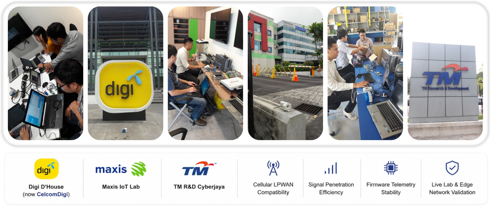

My portfolio of selected industry, academic, and professional recognition validating my contributions to Smart Metering, Advanced Metering Infrastructure (AMI), Smart Water, NB-IoT ecosystem rollouts, and utility digital transformations.
The track components compiled below are derived directly from public conference briefs, verified telecommunication interoperability testing facilities, and active national technology showcases.
Named Inventor: WONG YEW HON (Vincent Wong) — Water Metering Devices and Assembly.
Introduced structural and functional innovations in modular utility shroud configurations to lock down mechanical physical protection layers, maintain ultra-low power device metrics, and ensure highly precise bi-directional pulse tracking.
Pioneered early cellular LPWAN (NB-IoT) utility networks in Malaysia, driving national-level technology presentations and organizing carrier-grade pilot architectures from the ground up.
Demonstrating live NB-IoT telemetry data at the activation of Malaysia's first base station (left); leading proof-of-concept (POC) site audits for utility and telecommunication executives (center); and representing George Kent's technology architecture during a national infrastructure showcase alongside the Prime Minister (right).
Diverse water smart meter field installations demonstrating resilience across residential stands, underground valve boxes, deep rural configurations, and high-density residential indoor manifold clusters.
Ecosystem Alliances & R&D Milestones
Early laboratory research initiatives and corporate joint alliances that laid the strategic framework for fully localized utility hardware production capabilities:
Deep-track engineering research at the Huawei Shanghai NB-IoT OpenLab during early cellular ecosystem cycles (left); official corporate Memorandum of Understanding (MoU) signing ceremony between Maxis and George Kent (right).

Led comprehensive cross-operator interoperability testing and network compliance sign-offs inside top telecommunications R&D spaces, including Digi D'House (CelcomDigi), Maxis IoT Lab, and TM R&D Cyberjaya. Audits evaluated signal path penetration, deep concrete wall boundary decay, and telemetry stream stability under carrier-grade edge workloads.
Huawei Shanghai OpenLab
Executed advanced protocol verification and hardware network coupling optimizations at the core global Huawei research labs in 2017 to secure reliable LPWAN device baselines.
Carrier Interoperability
Directed rigorous end-to-end device testing parameters across major national operators (Maxis, CelcomDigi, TM R&D) to achieve zero data-loss validation under harsh signal conditions.
Enterprise MoUs
Formulated technical frameworks supporting strategic alliances between tier-1 network providers and industrial manufacturers to accelerate regional smart water grid integration.
Public Thought Leadership
Invited speaker at the prestigious AsiaWater 2026 Technology Seminar, delivering the track address: "Smart Metering for Asia: Enabling Digital Water Management" to regional utility boards, municipal water engineers, and regional corporate stakeholders.
The address detailed practical engineering considerations for low-power smart grids, real-world non-revenue water (NRW) reduction matrices, and frameworks designed to mitigate long-term network operational budgets.